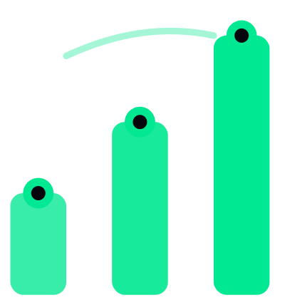

El retorno antes del gasto
Una hoja de trabajo de 6 pasos para estimar el retorno de una iniciativa de IA antes de comprometer presupuesto.
Basado en el libro Inteligencia Organizacional en la Era IA · Gonzalo Gompertz · 3G Intelligence
Por qué ahora
Una encuesta de Harris Poll a 900 CEOs muestra cuánto se juegan quienes toman la decisión.
Tu empresa quizá no tiene directorio. Tiene socios, un banco o una caja que no perdona. La pregunta es la misma: ¿cuál es el retorno y cuándo lo sabes?
La encuesta no incluye países de Latinoamérica; se cita para mostrar la dirección de la presión, no para describir tu mercado.
Hazla con lápiz y con datos de tu operación. Si no puedes llenar un paso con un dato real, ese vacío es el primer hallazgo.
En el libro Inteligencia Organizacional en la Era IA la tesis es que dos organizaciones con el mismo presupuesto, el mismo proveedor y el mismo caso de uso pueden obtener resultados radicalmente distintos. La diferencia está en la estructura de la organización, no en la tecnología. Revisa tres dimensiones:
Si alguna respuesta es No, el beneficio del paso 3 probablemente no se materialice aunque la tecnología funcione. Si los pasos 2 o 3 quedaron en blanco, todavía no tienes el número, y es mejor saberlo antes de gastar.
Parte con el Test ERA (gratis); si hace falta, sigue el Radar, que ubica dónde está tu empresa hoy. El retorno se cuantifica en el Plan de Vuelo: ROI a 12 meses con evidencia, antes de construir nada.
¿En qué ERA está tu empresa?
Descúbrelo con el Test ERA, desde 5 minutos — gratuito, con informe personalizado generado por IA.
Hacer el Test ERA → Conocer el libro3gi.cl/test-era · 3gi.cl/inteligencia-organizacional